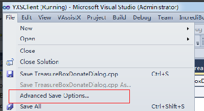
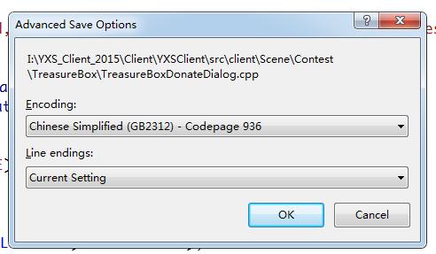

VS中Error C2001的解决办法
Posted on 周二 20 十月 2015 in 编程语言
VS中Error C2001的解决办法
今天遇到一个问题，在VS2010工程中，出现中文字符串时，出现了如下错误：
error C2001: newline in constant
error C2143: syntax error : missing ')' before '}'
error C2143: syntax error : missing ';' before '}'
产生原因可以参照：http://blog.163.com/zhaowenjia1989@126/blog/static/1094985792010224153119/
一些结局办法可以参照：http://www.cnblogs.com/kuliuheng/p/3397796.html
还有一个简单的办法：
1. 在VS中打开该代码文件。
2. 选择VS菜单栏中File->Advanced Save Options

-
选择中文的编码：
 -
重新编译，OK